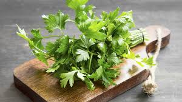
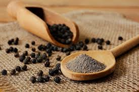

Huevos revueltos con Jamon.
Ingredientes:
- 4 huevos
- 50 g de jamón cocido (o jamón de tu preferencia)
- 1 cucharada de mantequilla o aceite
- Sal al gusto

- Pimienta al gusto (opcional)

- Perejil fresco (opcional, para decorar)
Instrucciones:
- Prepara los ingredientes:
- Corta el jamón en trozos pequeños.
- Rompe los huevos en un bowl y bátelos ligeramente con un tenedor. Añade una pizca de sal y pimienta si deseas.
- Calienta la sartén:
- Coloca una sartén a fuego medio y agrega la mantequilla o el aceite. Deja que se caliente.
- Cocina el jamón:
- Añade el jamón a la sartén y sofríe durante 1-2 minutos hasta que esté ligeramente dorado.
- Agrega los huevos:
- Vierte los huevos batidos en la sartén sobre el jamón.
- Con una espátula, remueve suavemente los huevos mientras se cocinan, para que queden esponjosos.
- Sirve:
- Cuando los huevos estén cocidos pero aún jugosos, retíralos del fuego.
- Decora con un poco de perejil fresco si lo deseas.
- ¡Sirve caliente y disfruta!